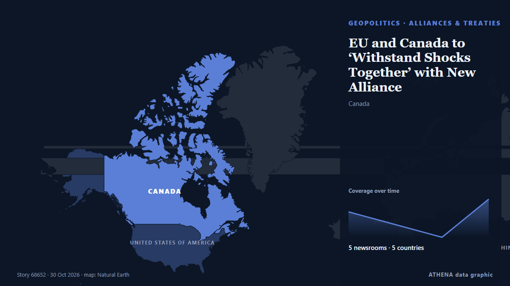

Alianzas y tratados
| 17 oct | 0 |
|---|---|
| 18 oct | 0 |
| 19 oct | 0 |
| 20 oct | 0 |
| 21 oct | 1 |
| 22 oct | 0 |
| 23 oct | 0 |
| 24 oct | 1 |
| 25 oct | 1 |
| 26 oct | 5 |
| 27 oct | 3 |
| 28 oct | 4 |
| 29 oct | 2 |
| 30 oct | 1 |
Los titulares se muestran en inglés, tal como se publicaron.

EU and Canada to ‘Withstand Shocks Together’ with New Alliance
The two parties are set to unveil a series of deals and lay the groundwork for a broader alliance open to other democracies seeking to better navigate global trade tensions. de Free Malaysia Today
Pakistan, Nigeria call for stronger strategic partnership, expanded trade
Associated Press Of Pakistan Pakistan, Bangladesh eye stronger trade ties through improved air links, diversified imports Bangladesh High Commissioner to Pakistan M.D. de APP (Associated Press of Pakistan)
We do not see our return to CSTO says Armenia's Mirzoyan
Armenia has ruled out resuming its participation in the Collective Security Treaty Organization (CSTO), reaffirming that its membership remains frozen and that Yerevan has no intention of reversing… de AzerNews
Canada-EU summit seeks deepened alliance as US ties fray
Leaders meeting in Montreal aim to deepen cooperation in defence, artificial intelligence and critical minerals as Canada and the EU navigate strained relations with the US. de Free Malaysia Today
Vietnam, Poland establish strategic partnership, set $6B trade target
Vietnam and Poland established a strategic partnership on Oct. de VnExpress International
Oman calls for economic and security pact between Iran and Gulf countries
Oman's Foreign Minister Badr Al Busaidi has called for a peace agreement between the Arab Gulf states and Iran, which would see the countries collaborating on security and the regional economy. de The National
Saudi defense pact countries push for peace in Tehran
Top officials from Saudi Arabia, Turkey and Pakistan met Iranian officials in Tehran on Monday in a bid to deescalate the Middle East conflict, as Yemen's Houthis launched new attacks on Saudi… de Korea Herald
US assigns nuclear submarine to Australia under AUKUS as China expands Pacific footprint
The Pentagon has announced that the USS Colorado will be the first US Navy submarine in Australia's rotational force. de Times of India
Today in Spain: A roundup of the latest news on Wednesday
New Ryanair flights from Málaga to Italy and Germany take off, Vox and PP reject memorial plaque for housing protests icon Maricarmen, China stops broadcasting Spain's football league over Mbappé… de The Local Spain
DP launches advisory body on foreign affairs, inter-Korean ties
SEOUL, Oct. 28 (Yonhap) -- The ruling Democratic Party (DP) on Wednesday launche... de Yonhap (English)
Chinese legislator attends 12th BRICS Parliamentary Forum in India
An Iranian parliamentary delegation would participate in the meeting in place of Mohammad Ghalibaf in the Brics forum in India. de Hindustan Times
From conflict to cooperation: China's vision for a more just global order
Mark Carney’s push for a middle-powers alliance meets Ursula von der Leyen’s bid for influence. de Politico Europe
Turkish parliamentary committee approves defense pact with Saudi Arabia and Pakistan
A Turkish parliamentary committee has approved a defense agreement with Saudi Arabia and Pakistan. de ABC News (International)